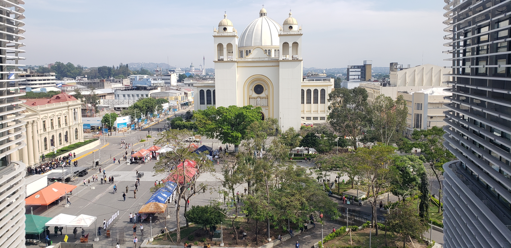
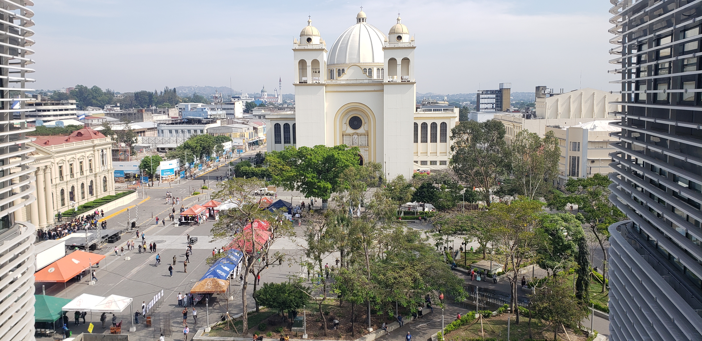

Our Tours
Crater & Capital Culture Experience (Full-Day)
 

Explore the majestic El Boquerón volcano crater followed by a cultural journey through San Salvador’s historic downtown. Visit iconic landmarks including the Cathedral, National Palace, and colorful murals, finishing with an immersive experience at the National Library (BINAES). Transportation, guide, and refreshments are included for a full-day adventure combining nature and culture.
Duration: 7–8 hours | Pickup: San Salvador / Surf City
El Tunco + Tamanique Waterfalls Adventure (Half to Full-Day)
Includes: Hike to scenic waterfalls and swimming spot in Tamanique, cliff jumping (optional), return to El Tunco for beach sunset and free time. Transportation, guide, water.
Ilamatepec Volcano Hike
Includes: Guided hike to crater of Santa Ana Volcano, transportation and water. Optional add-on: stop at Lake Coatepeque viewpoint.
Suchitoto Cultural Experience
Includes: Guided tour of colonial town, visit to Lake Suchitlán, indigo workshop or art gallery, transportation and lunch.
Ruta de las Flores Coffee & Culture Day
Includes: Juayúa food festival, coffee farm tour, Ataco street art and artisan market, transportation and guide.
El Pital Highland Escape
Includes: Scenic drive to highest point in El Salvador, guided walk in cloud forest. Optional: lunch or camping experience.
Los Cóbanos Snorkeling Experience
Includes: Guided snorkeling trip, coral reef beach relaxation, optional seafood lunch. Equipment included.
Mayan Ruins Combo: Tazumal + Joya de Cerén
Includes: Tour of Mayan ruins in Chalchuapa, visit to Joya de Cerén (UNESCO site).